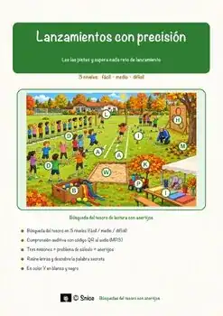
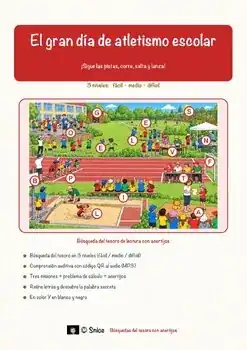
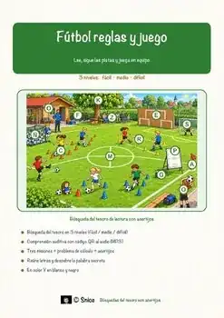
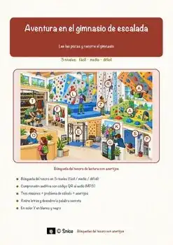
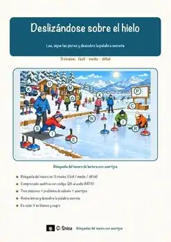
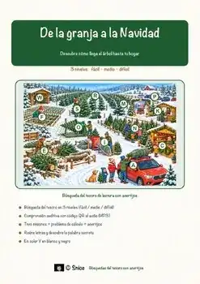

Grado 4
39 recursos en español para el grado 4, sin preparación y con solucionario.
39 recursos
Materia

«Dinero inteligente en el mercado» – Búsqueda del tesoro de lectura

«¿Puede aprender una computadora?» – Búsqueda del tesoro de lectura

«Siluetas de papel» – Búsqueda del tesoro de lectura

«Lanzamientos con precisión» – Búsqueda del tesoro de lectura

«Cómo responde tu cuerpo al frío» – Búsqueda del tesoro de lectura

«Arañas viajeras del otoño» – Búsqueda del tesoro de lectura

«Animales en el bosque invernal» – Búsqueda del tesoro de lectura

«Colores cálidos y fríos» – Búsqueda del tesoro de lectura

«El taller de velas» – Búsqueda del tesoro de lectura

«El gran día de atletismo escolar» – Búsqueda del tesoro de lectura

«La espera de Navidad» – Búsqueda del tesoro de lectura

«Centro de rescate de erizos» – Búsqueda del tesoro de lectura

«Del árbol a la tabla» – Búsqueda del tesoro de lectura

«Fútbol reglas y juego» – Búsqueda del tesoro de lectura

«Alimentación de animales en invierno» – Búsqueda del tesoro de lectura

«La cosecha de otoño» – Búsqueda del tesoro de lectura

«Noche en el observatorio» – Búsqueda del tesoro de lectura

«Misterio en la pradera» – Búsqueda del tesoro de lectura

«Aventura en el gimnasio de escalada» – Búsqueda del tesoro de lectura

«Dentro de la pista de hielo» – Búsqueda del tesoro de lectura

«El misterio del aliento» – Búsqueda del tesoro de lectura

«Aventura en la granja de calabazas» – Búsqueda del tesoro de lectura

«Un festín en el bosque» – Búsqueda del tesoro de lectura

«Deslizándose sobre el hielo» – Búsqueda del tesoro de lectura

«Rompiendo el hielo» – Búsqueda del tesoro de lectura

«De la granja a la Navidad» – Búsqueda del tesoro de lectura

«Semillas al viento» – Búsqueda del tesoro de lectura

«El misterio del hielo en el techo» – Búsqueda del tesoro de lectura

«Cometas en el cielo de otoño» – Búsqueda del tesoro de lectura

«El huerto de manzanas» – Búsqueda del tesoro de lectura

«Aventura en el sótano de manzanas» – Búsqueda del tesoro de lectura

«El viaje de la papa en la granja» – Búsqueda del tesoro de lectura

«Los vertebrados en el museo» – Búsqueda del tesoro de lectura

«La vida en una estación polar» – Búsqueda del tesoro de lectura

«El laboratorio de la nieve» – Búsqueda del tesoro de lectura

«Cómo pasan el invierno los animales» – Búsqueda del tesoro de lectura

«La temporada de calabazas en la granja» – Búsqueda del tesoro de lectura

«Por qué los abetos conservan sus agujas» – Búsqueda del tesoro de lectura

«Huellas de animales en la nieve» – Búsqueda del tesoro de lectura
No se encontraron recursos. Prueba con otra palabra o con otro filtro.